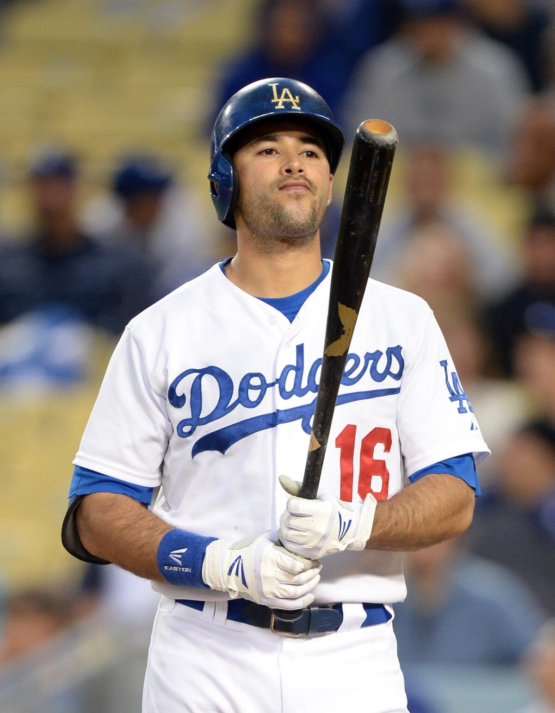
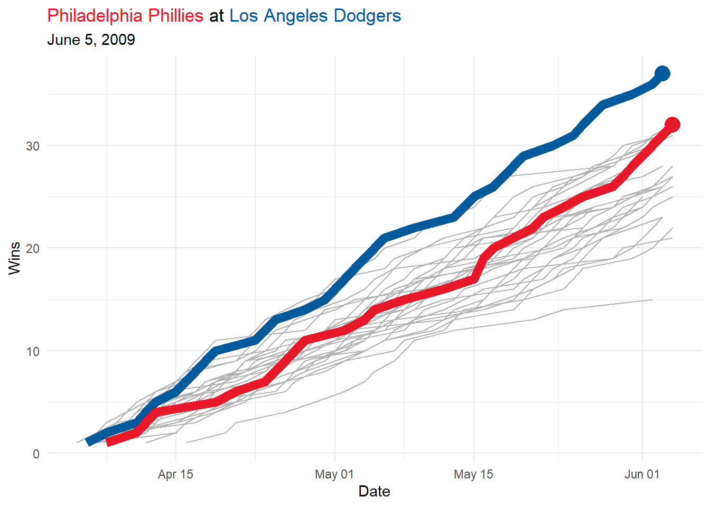
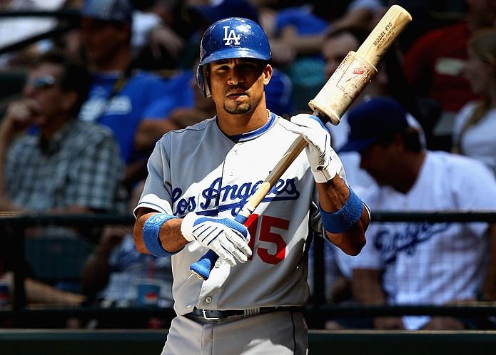
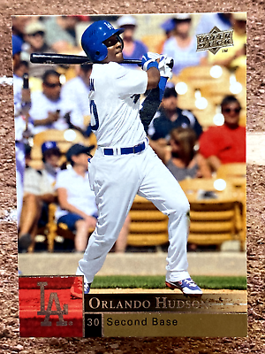
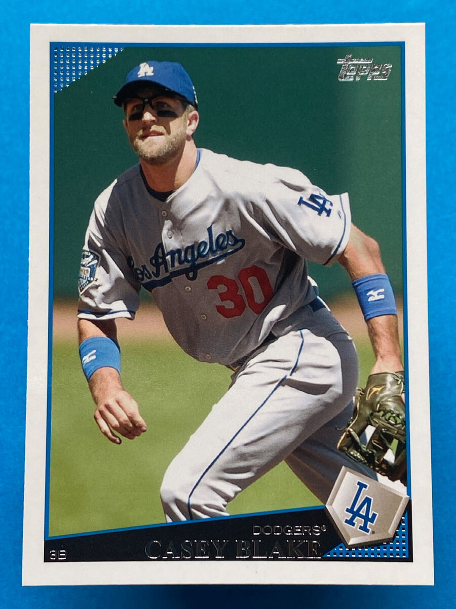
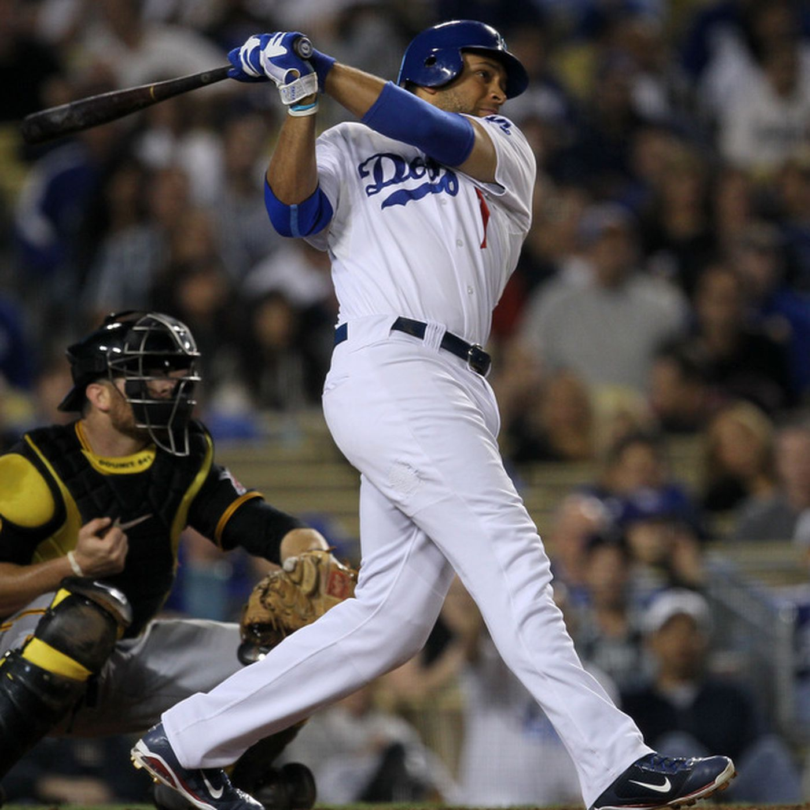
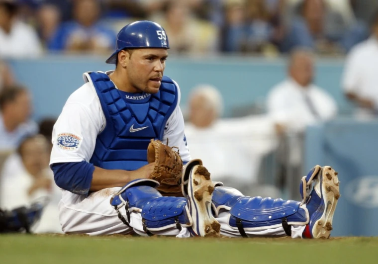
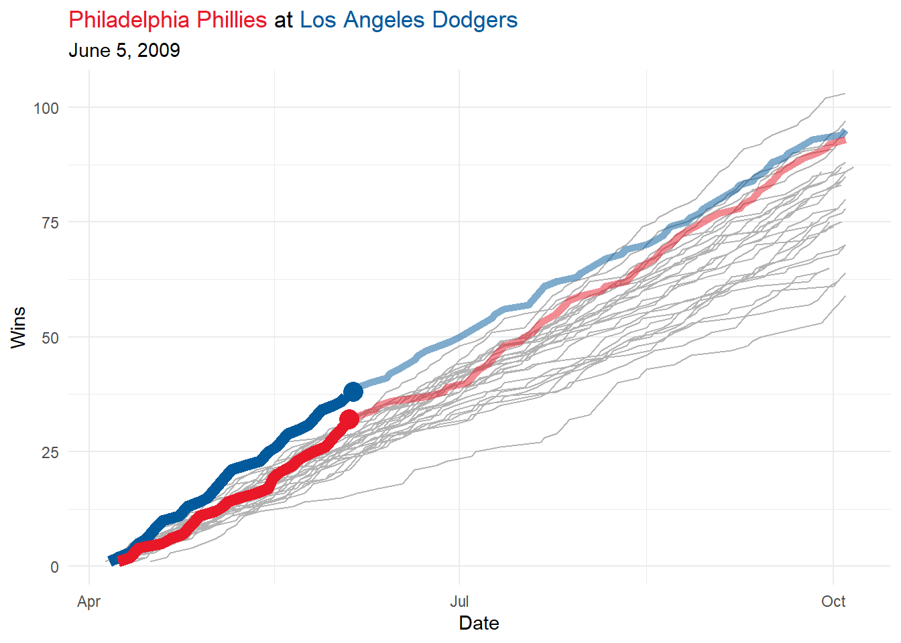

library("ggtext")
library("Lahman")
library("retrosheet")
library("tidyverse")Setting the Scene
I am finally reading Analyzing Baseball Data with R, and thankfully there is a book club over at the DSLC Slack channel (Data Science Learning Community). I want to apply our new skills to a particular half-inning that is cherished in my memories. In particular, I want to see if I can find a particular at-bat by Andre Ethier where he faced Brad Lidge in the bottom of the ninth …

After volunteering to present the chapter on Quarto for our book club, I have decided to further explore the retrosheet package for R users.
Data Sets
Lahman
The Lahman data set can help us find overall information through its People, Batting, Pitching, Fielding, and Teams tables (and this data set is more extensive than I remember). First, let us find certain players in the People table:
Lahman::People |>
filter(nameLast %in% c("Ethier", "Lidge", "Werth")) playerID birthYear birthMonth birthDay birthCity birthCountry birthState
1 ethiean01 1982 4 10 Phoenix USA AZ
2 lidgebr01 1976 12 23 Sacramento USA CA
3 werthde01 1952 12 29 Lincoln USA IL
4 werthja01 1979 5 20 Springfield USA IL
deathYear deathMonth deathDay deathCountry deathState deathCity nameFirst
1 NA NA NA <NA> <NA> <NA> Andre
2 NA NA NA <NA> <NA> <NA> Brad
3 NA NA NA <NA> <NA> <NA> Dennis
4 NA NA NA <NA> <NA> <NA> Jayson
nameLast nameGiven weight height bats throws debut bbrefID
1 Ethier Andre Everett 210 74 L L 2006-05-02 ethiean01
2 Lidge Bradley Thomas 210 77 R R 2002-04-26 lidgebr01
3 Werth Dennis Dean 200 73 R R 1979-09-17 werthde01
4 Werth Jayson Richard Gowan 235 77 R R 2002-09-01 werthja01
finalGame retroID deathDate birthDate
1 2017-10-01 ethia001 <NA> 1982-04-10
2 2012-06-16 lidgb001 <NA> 1976-12-23
3 1982-09-27 wertd101 <NA> 1952-12-29
4 2017-10-01 wertj001 <NA> 1979-05-20We will need these player IDs (the latter one in the case of “Werth”). I will now try to look up Ethier, Lidge, and Werth in the Batting, Pitching, and Fielding tables respectively.
Lahman::Batting |>
filter(playerID == "ethiean01") playerID yearID stint teamID lgID G AB R H X2B X3B HR RBI SB CS BB
1 ethiean01 2006 1 LAN NL 126 396 50 122 20 7 11 55 5 5 34
2 ethiean01 2007 1 LAN NL 153 447 50 127 32 2 13 64 0 4 46
3 ethiean01 2008 1 LAN NL 141 525 90 160 38 5 20 77 6 3 59
4 ethiean01 2009 1 LAN NL 160 596 92 162 42 3 31 106 6 4 72
5 ethiean01 2010 1 LAN NL 139 517 71 151 33 1 23 82 2 1 59
6 ethiean01 2011 1 LAN NL 135 487 67 142 30 0 11 62 0 1 58
7 ethiean01 2012 1 LAN NL 149 556 79 158 36 1 20 89 2 2 50
8 ethiean01 2013 1 LAN NL 142 482 54 131 33 2 12 52 4 3 61
9 ethiean01 2014 1 LAN NL 130 341 29 85 17 6 4 42 2 2 31
10 ethiean01 2015 1 LAN NL 142 395 54 116 20 7 14 53 2 3 43
11 ethiean01 2016 1 LAN NL 16 24 2 5 1 0 1 2 0 0 2
12 ethiean01 2017 1 LAN NL 22 34 3 8 1 0 2 3 0 0 4
SO IBB HBP SH SF GIDP
1 77 2 5 0 6 11
2 68 12 4 0 8 10
3 88 0 4 1 7 6
4 116 10 13 0 4 19
5 102 11 3 0 6 11
6 103 9 3 0 3 8
7 124 6 9 0 3 13
8 95 11 7 0 3 9
9 74 3 6 1 1 5
10 75 2 4 0 3 11
11 6 1 0 0 0 1
12 10 1 0 0 0 0Lahman::Pitching |>
filter(playerID == "lidgebr01") playerID yearID stint teamID lgID W L G GS CG SHO SV IPouts H ER HR BB
1 lidgebr01 2002 1 HOU NL 1 0 6 1 0 0 0 26 12 6 0 9
2 lidgebr01 2003 1 HOU NL 6 3 78 0 0 0 1 255 60 34 6 42
3 lidgebr01 2004 1 HOU NL 6 5 80 0 0 0 29 284 57 20 8 30
4 lidgebr01 2005 1 HOU NL 4 4 70 0 0 0 42 212 58 18 5 23
5 lidgebr01 2006 1 HOU NL 1 5 78 0 0 0 32 225 69 44 10 36
6 lidgebr01 2007 1 HOU NL 5 3 66 0 0 0 19 201 54 25 9 30
7 lidgebr01 2008 1 PHI NL 2 0 72 0 0 0 41 208 50 15 2 35
8 lidgebr01 2009 1 PHI NL 0 8 67 0 0 0 31 176 72 47 11 34
9 lidgebr01 2010 1 PHI NL 1 1 50 0 0 0 27 137 32 15 5 24
10 lidgebr01 2011 1 PHI NL 0 2 25 0 0 0 1 58 16 3 0 13
11 lidgebr01 2012 1 WAS NL 0 1 11 0 0 0 2 28 12 10 1 11
SO BAOpp ERA IBB WP HBP BK BFP GF R SH SF GIDP
1 12 0.333 6.23 1 0 2 0 48 2 6 1 0 1
2 97 0.202 3.60 7 4 5 1 349 9 36 2 3 6
3 157 0.174 1.90 5 3 6 1 369 44 21 3 2 5
4 103 0.223 2.29 1 8 3 0 291 65 21 4 1 1
5 104 0.238 5.28 4 11 6 0 340 52 47 6 2 2
6 88 0.219 3.36 4 6 4 0 287 34 29 5 1 3
7 92 0.198 1.95 4 5 1 0 292 61 17 2 1 3
8 61 0.301 7.21 3 4 5 0 283 55 51 4 1 4
9 52 0.194 2.96 4 3 1 1 193 38 16 3 0 2
10 23 0.225 1.40 3 2 1 0 86 4 3 1 0 1
11 10 0.308 9.64 5 0 0 0 51 4 10 1 0 0Lahman::Fielding |>
filter(playerID == "werthja01") playerID yearID stint teamID lgID POS G GS InnOuts PO A E DP PB WP SB
1 werthja01 2002 1 TOR AL OF 15 13 363 33 1 0 0 NA NA NA
2 werthja01 2003 1 TOR AL OF 20 11 324 27 1 0 0 NA NA NA
3 werthja01 2004 1 LAN NL OF 79 70 1932 146 6 4 2 NA NA NA
4 werthja01 2005 1 LAN NL OF 101 96 2493 218 6 3 2 NA NA NA
5 werthja01 2007 1 PHI NL 1B 1 0 3 1 0 0 0 NA NA NA
6 werthja01 2007 1 PHI NL OF 76 63 1727 147 9 2 2 NA NA NA
7 werthja01 2008 1 PHI NL OF 125 103 2898 231 9 2 2 NA NA NA
8 werthja01 2009 1 PHI NL OF 157 152 4138 353 11 6 4 NA NA NA
9 werthja01 2010 1 PHI NL OF 153 150 4026 293 8 4 2 NA NA NA
10 werthja01 2011 1 WAS NL OF 149 148 3973 342 11 8 4 NA NA NA
11 werthja01 2012 1 WAS NL OF 79 79 2076 166 4 1 1 NA NA NA
12 werthja01 2013 1 WAS NL OF 126 126 3216 235 7 2 1 NA NA NA
13 werthja01 2014 1 WAS NL OF 139 137 3662 247 8 5 1 NA NA NA
14 werthja01 2015 1 WAS NL OF 86 84 2162 113 3 2 0 NA NA NA
15 werthja01 2016 1 WAS NL OF 133 133 3474 201 5 1 1 NA NA NA
16 werthja01 2017 1 WAS NL OF 67 67 1655 116 1 4 0 NA NA NA
CS ZR
1 NA NA
2 NA NA
3 NA NA
4 NA NA
5 NA NA
6 NA NA
7 NA NA
8 NA NA
9 NA NA
10 NA NA
11 NA NA
12 NA NA
13 NA NA
14 NA NA
15 NA NA
16 NA NA
Brad Lidge
“Bradley Thomas Lidge (born December 23, 1976), nicknamed”Lights Out”,[1] is an American former professional baseball pitcher. Lidge played 11 seasons in Major League Baseball (MLB), from 2002–2012. He played for the Houston Astros, Philadelphia Phillies, and Washington Nationals. As a relief pitcher Lidge saved 225 games during his career. He was a two-time All-Star, and in 2008 won the Delivery Man of the Year Award and the National League (NL) Rolaids Relief Man Award. Lidge was a host on SiriusXM’s MLB Network Radio.
“Lidge threw a four-seam fastball that consistently reached 95–97 miles per hour, as well as a hard, sharp breaking slider that ranged from 85 to 87 mph. He also had a cutter of the variation. He sealed the Phillies’ 2008 World Series championship with the final out, a strikeout of Eric Hinske in Game 5.” —Wikipedia
Andre Ethier
“Andre Everett Ethier (/ˈiːθiər/; born April 10, 1982) is an American former professional baseball outfielder. He played in Major League Baseball (MLB) for the Los Angeles Dodgers from 2006 to 2017 and is second all-time in post-season appearances as a Dodger with 51.
“Drafted in the second round (62nd pick overall) of the 2003 MLB draft by the Oakland Athletics, Ethier played in the major leagues from 2006 through 2017, all for the Dodgers. Career highlights include All-Star selections in 2010 and 2011, a Silver Slugger Award in 2009, and a Gold Glove Award in 2011. Primarily a right fielder throughout his career, Ethier also filled in at left field and center field for the Dodgers. Due to leg and back injuries, he had only 58 at bats in the 2016 and 2017 regular seasons, combined.” —Wikipedia
Retrosheet
Let us try out the retrosheet package (by Colin Douglas and Richard Scriven) to get game data from each of those four seasons where Brad Lidge was pitching for the Philadelphia Phillies. Note: we probably do not have to concern ourselves with mid-season trades in this case study.
season_2008 <- retrosheet::get_retrosheet("game", 2008)
season_2009 <- retrosheet::get_retrosheet("game", 2009)
season_2010 <- retrosheet::get_retrosheet("game", 2010)
season_2011 <- retrosheet::get_retrosheet("game", 2011)Statcast
(optional) Obtaining Chadwick IDs
As recommended by the textbook authors in section C.2, we can load a list of player IDs for Statcast data (takes a few seconds to load and download)
chadwick_id <- baseballr::chadwick_player_lu()
readr::write_rds(chadwick_id, "data/chadwick_id.rds")
chadwick_id <- readr::read_rds("data/chadwick_id.rds")
statcast_ids <- chadwick_id |>
filter(name_last %in% c("Ethier", "Lidge", "Werth")) |>
select(key_mlbam, name_last, name_first, mlb_played_first, mlb_played_last) |>
filter(!is.na(mlb_played_first))
readr::write_rds(statcast_ids, "data/statcast_ids.rds")Here, I kept a subset of the data rather than keeping a 100 MB file in our GitHub repo.
statcast_ids <- readr::read_rds("data/statcast_ids.rds")
statcast_ids# A tibble: 4 × 5
key_mlbam name_last name_first mlb_played_first mlb_played_last
<int> <chr> <chr> <int> <int>
1 400058 Lidge Brad 2002 2012
2 124099 Werth Dennis 1979 1982
3 444843 Ethier Andre 2006 2017
4 150029 Werth Jayson 2002 2017Match Ups
Retrosheet
For this case study, we can use the filter command from the dplyr to subset our data where
- visiting team: Philadelphia Phillies
- home team: Los Angeles Dodgers
lidge_phillies_dodgers <- rbind(season_2008, season_2009, season_2010, season_2011) |>
dplyr::filter(VisTm == "PHI" & HmTm == "LAN")
lidge_phillies_dodgers |> select(Date, VisTm, HmTm, VisRuns, HmRuns, Attendance) Date VisTm HmTm VisRuns HmRuns Attendance
1 2008-08-11 PHI LAN 6 8 45547
2 2008-08-12 PHI LAN 3 4 47586
3 2008-08-13 PHI LAN 6 7 45786
4 2008-08-14 PHI LAN 1 3 51060
5 2009-06-04 PHI LAN 3 0 33839
6 2009-06-05 PHI LAN 3 4 52538
7 2009-06-06 PHI LAN 2 3 41412
8 2009-06-07 PHI LAN 7 2 42288
9 2010-08-30 PHI LAN 0 3 44896
10 2010-08-31 PHI LAN 8 4 45164
11 2010-09-01 PHI LAN 5 1 37080
12 2011-08-08 PHI LAN 5 3 35380
13 2011-08-09 PHI LAN 2 1 46547
14 2011-08-10 PHI LAN 9 8 41807Statcast
In addition to the calendar dates found above, we can try to get pitch-by-pitch data from the statcast_search function in the baseballr package.
lidge1 <- baseballr::statcast_search(start_date = "2008-08-11", end_date = "2008-08-11", playerid = 400058)
Oops
I forgot that Statcast data only dates back to 2015
Schedule
Why June 5, 2009?
For brevity, I looked up the game in particular with a simple search of Baseball Reference. Other dplyr filters could have been applied after more data wrangling.
schedule_2009 <- retrosheet::getRetrosheet("schedule", 2009)
schedule_2009 |> filter(Date == "20090605") Date GameNo Day VisTeam VisLg VisGmNo HmTeam HmLg HmGmNo TimeOfDay
1 20090605 0 Fri MIL NL 55 ATL NL 55 N
2 20090605 0 Fri TEX AL 54 BOS AL 55 N
3 20090605 0 Fri CLE AL 57 CHA AL 56 N
4 20090605 0 Fri CHN NL 55 CIN NL 55 N
5 20090605 0 Fri ANA AL 55 DET AL 55 N
6 20090605 0 Fri SFN NL 53 FLO NL 56 N
7 20090605 0 Fri PIT NL 56 HOU NL 55 N
8 20090605 0 Fri PHI NL 55 LAN NL 57 N
9 20090605 0 Fri TBA AL 57 NYA AL 57 N
10 20090605 0 Fri BAL AL 55 OAK AL 55 N
11 20090605 0 Fri ARI NL 56 SDN NL 55 N
12 20090605 0 Fri MIN AL 56 SEA AL 55 N
13 20090605 0 Fri COL NL 54 SLN NL 57 N
14 20090605 0 Fri KCA AL 54 TOR AL 57 N
15 20090605 0 Fri NYN NL 55 WAS NL 55 N
Postponed Makeup
1 NA
2 NA
3 NA
4 NA
5 NA
6 NA
7 NA
8 NA
9 Rain 20090907
10 NA
11 NA
12 NA
13 NA
14 NA
15 NAStandings
2008 Season
In the previous season,
Lahman::Teams |>
filter(yearID == 2008) |>
filter(lgID == "NL") |>
select(yearID, teamID, W, L, DivWin, WCWin, LgWin, WSWin) |>
arrange(desc(W)) |>
filter(W > 81) yearID teamID W L DivWin WCWin LgWin WSWin
1 2008 CHN 97 64 Y N N N
2 2008 PHI 92 70 Y N Y Y
3 2008 MIL 90 72 N Y N N
4 2008 NYN 89 73 N N N N
5 2008 HOU 86 75 N N N N
6 2008 SLN 86 76 N N N N
7 2008 FLO 84 77 N N N N
8 2008 LAN 84 78 Y N N N
9 2008 ARI 82 80 N N N Nthe Dodgers won the NL West (with a relatively low amount of wins), lost to the Phillies in the NLCS, and then Phillies went on to defeat the Tampa Bay Rays in the World Series.
2009 Season
standings_2009 <- season_2009 |>
select(Date, VisTm, HmTm, VisRuns, HmRuns) |>
mutate(WinTm = ifelse(VisRuns > HmRuns, VisTm, HmTm)) |>
count(WinTm, Date, name = "TeamWins") |>
group_by(WinTm) |>
mutate(TeamWins = cumsum(TeamWins)) |>
ungroup()
title_text <- "<span style='color:#E81828;'>Philadelphia Phillies</span> at <span style='color:#005A9C;'>Los Angeles Dodgers</span>"
standings_2009 |>
ggplot(aes(x = Date, y = TeamWins, group = WinTm)) +
# geom_vline(xintercept = "2009-06-05") +
geom_line(aes(x = Date, y = TeamWins, group = WinTm),
color = "gray70",
data = standings_2009 |> filter(!WinTm %in% c("LAN", "PHI") & Date < "2009-06-05")) +
geom_line(aes(x = Date, y = TeamWins),
color = "#005A9C",
data = standings_2009 |>
filter(WinTm == "LAN" & Date < "2009-06-05"),
linewidth = 3) +
geom_line(aes(x = Date, y = TeamWins),
color = "#E81828",
data = standings_2009 |>
filter(WinTm == "PHI" & Date < "2009-06-05"),
linewidth = 3) +
geom_point(aes(x = Date, y = TeamWins),
color = "#005A9C",
data = standings_2009 |>
filter(WinTm == "LAN" & Date == "2009-06-03"),
size = 5) +
geom_point(aes(x = Date, y = TeamWins),
color = "#E81828",
data = standings_2009 |>
filter(WinTm == "PHI" & Date == "2009-06-04"),
size = 5) +
labs(title = title_text,
subtitle = "June 5, 2009",
y = "Wins") +
theme_minimal() +
theme(plot.title = ggtext::element_markdown())Play by Play
Retrosheet play-by-play data
dodgers_2009 <- retrosheet::getRetrosheet("play", 2009, "LAN")
#length(dodgers_2009) # 81 home games
#class(dodgers_2009) # list
str(dodgers_2009[[1]])List of 8
$ id : chr "LAN200904130"
$ version: chr "2"
$ info : chr [1:26, 1:2] "visteam" "hometeam" "site" "date" ...
..- attr(*, "dimnames")=List of 2
.. ..$ : NULL
.. ..$ : chr [1:2] "category" "info"
$ start : chr [1:18, 1:5] "winnr001" "rente001" "lewif001" "molib001" ...
..- attr(*, "dimnames")=List of 2
.. ..$ : NULL
.. ..$ : chr [1:5] "retroID" "name" "team" "batPos" ...
$ play : chr [1:92, 1:6] "1" "1" "1" "1" ...
..- attr(*, "dimnames")=List of 2
.. ..$ : NULL
.. ..$ : chr [1:6] "inning" "team" "retroID" "count" ...
$ com : chr(0)
$ sub : chr [1:17, 1:5] "valdm003" "velee001" "meddb001" "velee001" ...
..- attr(*, "dimnames")=List of 2
.. ..$ : NULL
.. ..$ : chr [1:5] "retroID" "name" "team" "batPos" ...
$ data : chr [1:8, 1:3] "er" "er" "er" "er" ...
..- attr(*, "dimnames")=List of 2
.. ..$ : NULL
.. ..$ : chr [1:3] "projCode" "retroID" "ER"num_home <- length(dodgers_2009)
for(game_index in 1:num_home){
if(dodgers_2009[[game_index]]$id == "LAN200906050"){
print(paste0("Home game number: ", game_index))
break
}
}[1] "Home game number: 28"dodgers200906050 <- dodgers_2009[[28]]game_df <- dodgers200906050$play |> as.data.frame()First Inning
game_df |> filter(inning == 1) inning team retroID count pitches play
1 1 0 rollj001 10 BX 5/F56-
2 1 0 utlec001 01 CX S5/G56S-
3 1 0 wertj001 32 BCSBB>B W.1-2
4 1 0 howar001 02 SFS K
5 1 0 ibanr001 02 CFX 4/F4S-
6 1 1 pierj002 21 CBBX S7/G56+
7 1 1 furcr001 00 11>B SB2
8 1 1 furcr001 31 11>B.CBBX 4/P3F/DP.2X3(45)
9 1 1 hudso001 20 BBX 9/F89D+Run-Scoring Plays
game_df |>
filter((str_detect(retroID, "iba") & inning == 3) |
(str_detect(retroID, "utl") & inning == 4) |
(str_detect(retroID, "hud") & inning == 4) |
(str_detect(retroID, "lon") & inning == 7)) inning team retroID count pitches play
1 3 0 ibanr001 11 FBX 36(1)/FO/G4S.3-H
2 4 0 utlec001 01 FX D9/L9LM+.2-H(UR);1-H(UR)
3 4 1 hudso001 20 *BBX 63/G6MD.3-H
4 7 1 lonej001 10 BX S9/F89S-.2-HAt this time, I simply used the parsed results at Baseball Reference
- top 3rd: Raul Ibanez RBI groundout (PHI 1, LAD 0)
- top 4th: Chase Utley 2-RBI double (PHI 3, LAD 0)
- bottom 4th: Orlando Hudson RBI groundout (PHI 3, LAD 1)
- bottom 7th: James Loney RBI single (PHI 3, LAD 2)
Bottom of the Ninth
game_df |>
filter(inning == 9 & team == 1)With the save situation, Philadelphia sent their closer Brad Lidge to the mound to face the heart of the Dodger lineup.

game_df |>
filter(inning == 9 & team == 1) |>
filter(str_detect(retroID, "fur")) inning team retroID count pitches play
1 9 1 furcr001 00 NP
2 9 1 furcr001 32 .CCBBBC KAfter two quick strikes, Furcal worked up to a full count. Lidge was able to get Furcal to strikeout looking.
One out

game_df |>
filter(inning == 9 & team == 1) |>
filter(str_detect(retroID, "hud")) inning team retroID count pitches play
1 9 1 hudso001 12 CBCX 13/G13-On a 1-2 count, Hudson grounded out to the pitcher.
Two outs

game_df |>
filter(inning == 9 & team == 1) |>
filter(str_detect(retroID, "bla")) inning team retroID count pitches play
1 9 1 blakc001 12 CBSX S7/L78SAfter a 1-2 count, Casey Blake singled to left field.
Runner on first

game_df |>
filter(inning == 9 & team == 1) |>
filter(str_detect(retroID, "lon")) inning team retroID count pitches play
1 9 1 lonej001 32 CBS*BF*B>B W.1-2- called strike
- ball
- swinging strike (blocked by catcher)
- ball
- foul (blocked by catcher)
- ball (Blake faked steal attempt)
- ball (Blake to 2B)
Clean-up hitter James Loney worked a walk.
Runners on first and second

game_df |>
filter(inning == 9 & team == 1) |>
filter(str_detect(retroID, "mar")) inning team retroID count pitches play
1 9 1 martr004 12 S*BCX E5/G5+.2-3;1-2After a 1-2 count, Martin lightly hit a squibber, but the third baseman committed an error!
Bases loaded
game_df |>
filter(inning == 9 & team == 1) |>
filter(str_detect(retroID, "eth")) inning team retroID count pitches play
1 9 1 ethia001 00 X D9/F9LD+.3-H(UR);2-H(UR);1-3On the very next pitch, Ethier hit a long double down the right-field line for a walk-off victory!
Dodgers win!
Epilogue

title_text <- "<span style='color:#E81828;'>Philadelphia Phillies</span> at <span style='color:#005A9C;'>Los Angeles Dodgers</span>"
standings_2009 |>
ggplot(aes(x = Date, y = TeamWins, group = WinTm)) +
# geom_vline(xintercept = "2009-06-05") +
geom_line(aes(x = Date, y = TeamWins, group = WinTm),
color = "gray70",
data = standings_2009 |> filter(!WinTm %in% c("LAN", "PHI"))) +
geom_line(aes(x = Date, y = TeamWins),
alpha = 0.5,
color = "#005A9C",
data = standings_2009 |> filter(WinTm == "LAN"),
linewidth = 2) +
geom_line(aes(x = Date, y = TeamWins),
alpha = 0.5,
color = "#E81828",
data = standings_2009 |> filter(WinTm == "PHI"),
linewidth = 2) +
geom_line(aes(x = Date, y = TeamWins),
color = "#005A9C",
data = standings_2009 |>
filter(WinTm == "LAN" & Date < "2009-06-05"),
linewidth = 3) +
geom_line(aes(x = Date, y = TeamWins),
color = "#E81828",
data = standings_2009 |>
filter(WinTm == "PHI" & Date < "2009-06-05"),
linewidth = 3) +
geom_point(aes(x = Date, y = TeamWins),
color = "#005A9C",
data = standings_2009 |>
filter(WinTm == "LAN" & Date == "2009-06-05"),
size = 5) +
geom_point(aes(x = Date, y = TeamWins),
color = "#E81828",
data = standings_2009 |>
filter(WinTm == "PHI" & Date == "2009-06-04"),
size = 5) +
labs(title = title_text,
subtitle = "June 5, 2009",
y = "Wins") +
theme_minimal() +
theme(plot.title = ggtext::element_markdown())Lahman::Teams |>
filter(yearID == 2009) |>
filter(lgID == "NL") |>
select(yearID, teamID, W, L, DivWin, WCWin, LgWin, WSWin) |>
arrange(desc(W)) |>
filter(W > 81) yearID teamID W L DivWin WCWin LgWin WSWin
1 2009 LAN 95 67 Y N N N
2 2009 PHI 93 69 Y N Y N
3 2009 COL 92 70 N Y N N
4 2009 SLN 91 71 Y N N N
5 2009 SFN 88 74 N N N N
6 2009 FLO 87 75 N N N N
7 2009 ATL 86 76 N N N N
8 2009 CHN 83 78 N N N NThe Dodgers and Phillies would face off in the NLCS again in 2009—with the Phillies once again defeating the Dodgers 4 games to one. The Phillies would not repeat as champions in the World Series, however, as that season was won by the New York Yankees.
Session Info
sessionInfo()R version 4.5.1 (2025-06-13 ucrt)
Platform: x86_64-w64-mingw32/x64
Running under: Windows 10 x64 (build 19045)
Matrix products: default
LAPACK version 3.12.1
locale:
[1] LC_COLLATE=English_United States.utf8
[2] LC_CTYPE=English_United States.utf8
[3] LC_MONETARY=English_United States.utf8
[4] LC_NUMERIC=C
[5] LC_TIME=English_United States.utf8
time zone: America/New_York
tzcode source: internal
attached base packages:
[1] stats graphics grDevices utils datasets methods base
other attached packages:
[1] lubridate_1.9.4 forcats_1.0.0 stringr_1.5.1 dplyr_1.1.4
[5] purrr_1.1.0 readr_2.1.5 tidyr_1.3.1 tibble_3.3.0
[9] ggplot2_3.5.2 tidyverse_2.0.0 retrosheet_1.1.6 Lahman_12.0-0
[13] ggtext_0.1.2
loaded via a namespace (and not attached):
[1] utf8_1.2.6 generics_0.1.4 xml2_1.3.8 stringi_1.8.7
[5] hms_1.1.3 digest_0.6.37 magrittr_2.0.3 evaluate_1.0.4
[9] grid_4.5.1 timechange_0.3.0 RColorBrewer_1.1-3 fastmap_1.2.0
[13] jsonlite_2.0.0 httr_1.4.7 rvest_1.0.4 scales_1.4.0
[17] cli_3.6.5 rlang_1.1.6 litedown_0.7 commonmark_2.0.0
[21] withr_3.0.2 yaml_2.3.10 tools_4.5.1 tzdb_0.5.0
[25] curl_6.4.0 vctrs_0.6.5 R6_2.6.1 lifecycle_1.0.4
[29] htmlwidgets_1.6.4 pkgconfig_2.0.3 pillar_1.11.0 gtable_0.3.6
[33] glue_1.8.0 Rcpp_1.1.0 xfun_0.52 tidyselect_1.2.1
[37] rstudioapi_0.17.1 knitr_1.50 farver_2.1.2 htmltools_0.5.8.1
[41] rmarkdown_2.29 labeling_0.4.3 compiler_4.5.1 markdown_2.0
[45] gridtext_0.1.5